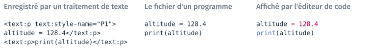
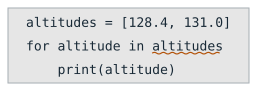
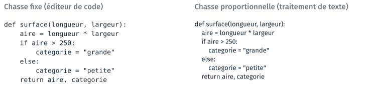
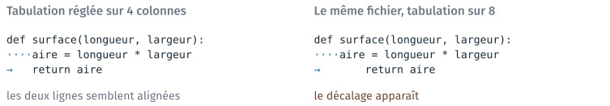
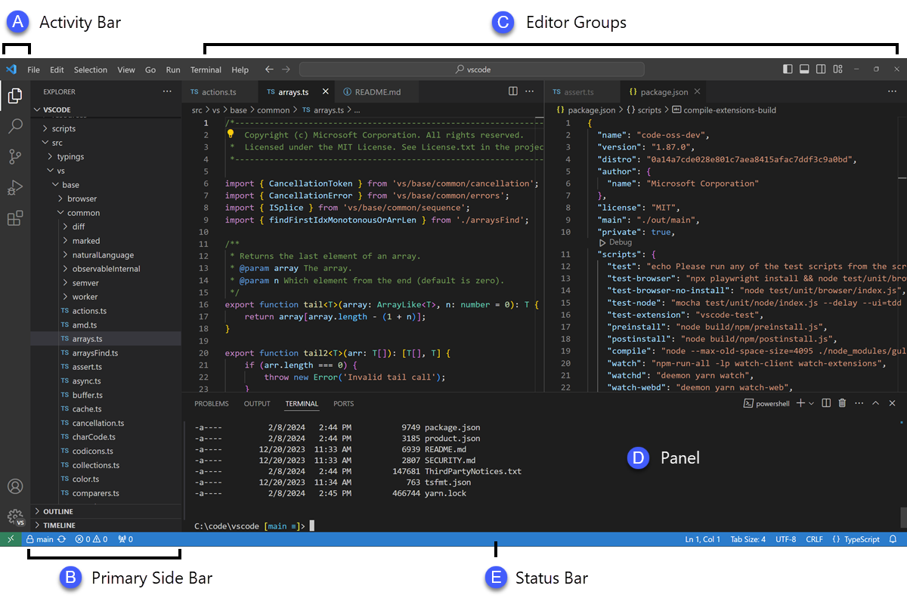

L’éditeur de code#
Cette partie présente l’éditeur de code, le logiciel dans lequel s’écrivent les programmes, leurs réglages et leur documentation. Elle décrit ce qu’il ajoute à un éditeur de texte ordinaire, puis la fenêtre de VS Code et sa configuration. Deux TD l’accompagnent, le TD 2a et le TD 2b ; ils sont présentés en fin de page.
Les fonctions d’un IDE#
Environnement de développement intégré (IDE)
Logiciel qui réunit les outils nécessaires pour écrire, exécuter, tester et mettre au point des programmes, avec des fonctions propres à un ou plusieurs langages de programmation.
D’après Wikipédia (en anglais), Integrated development environment.
Un éditeur de texte ordinaire, comme le Bloc-notes, sait seulement écrire du texte. Un IDE y ajoute les autres fonctions du tableau, dans la même fenêtre.
La fonction |
Ce que l’éditeur en fournit |
|---|---|
Écrire le code |
la coloration, l’indentation, la complétion, le soulignement des fautes |
Le lancer et le tester |
un terminal intégré et un bouton d’exécution, dans la même fenêtre |
Naviguer dans le projet |
l’arborescence des fichiers, la recherche dans tous les fichiers |
Déboguer |
l’exécution pas à pas, l’arrêt sur une ligne, la lecture des variables |
Connaître le langage |
certains IDE ne servent qu’un langage ; d’autres s’étendent par des extensions |
Le module emploie Visual Studio Code (VS Code). Il sert plusieurs langages, et la prise en charge de chacun s’ajoute par une extension de l’éditeur : l’extension Python, l’extension C/C++. D’autres IDE ne servent qu’un langage, comme RStudio pour R ou l’IDE Arduino.
Avertissement
Un IDE ne contient pas forcément l’interpréteur ni le compilateur du langage. Ils s’installent à part, et se configurent pour chaque langage et chaque système d’exploitation. Le bouton d’exécution de l’éditeur appelle un outil installé par ailleurs :
si cet outil n’est pas installé, le programme ne se lance pas ;
si l’éditeur appelle un autre Python que celui du module, le programme se lance sans les bibliothèques installées pour le module.
Texte brut et règles du langage#
Un programme s’écrit en texte brut : le fichier ne contient que les caractères du programme. Un traitement de texte, comme Word ou LibreOffice Writer, enregistre en plus la mise en forme du document, et l’interpréteur ne peut plus lire le programme.

Les mêmes deux lignes de code, dans un fichier de traitement de texte, dans le fichier d’un programme, et affichées par l’éditeur de code.#
Avertissement
Un programme ne s’écrit jamais dans Word ni dans LibreOffice. Un
traitement de texte remplace aussi les guillemets droits " par des
guillemets typographiques “ ”. Un programme copié depuis un document Word
peut s’arrêter pour cette raison, sur un message qui ne mentionne pas les
guillemets.
Le panneau du milieu et celui de droite montrent le même fichier, octet pour octet. Un langage de programmation a une syntaxe, un ensemble de règles d’écriture défini. VS Code a les règles des langages courants, et colore chaque catégorie de mot sans rien ajouter au fichier :
les mots du langage et les fonctions connues, comme
forouprint;les nombres ;
le texte entre guillemets ;
les noms choisis par celui qui écrit.
Un mot du langage mal orthographié perd sa couleur, ce qui se voit sans rien exécuter.
Les mêmes règles servent à vérifier le texte. L’extension Python relit le fichier pendant la frappe et souligne ce qui ne suit pas les règles, sans lancer le programme, comme un correcteur orthographique souligne un mot mal écrit.

La faute soulignée par l’éditeur : le deux-points manque à la fin de la
ligne for.#
Sans l’éditeur, cette faute n’apparaîtrait qu’au lancement du programme. Python 3.12 affiche alors un message qui se termine par ces trois lignes :
for altitude in altitudes
^
SyntaxError: expected ':'
Note
Le message désigne l’endroit où l’interpréteur ne peut plus continuer, qui se trouve parfois après la faute. La vérification porte seulement sur l’écriture : un programme sans faute soulignée peut calculer autre chose que ce qu’on voulait.
Chasse fixe et chasse proportionnelle#
Un éditeur de code affiche le texte dans une police à chasse fixe, où
toutes les lettres ont la même largeur. Un traitement de texte emploie une
police à chasse proportionnelle, où le i est plus étroit que le m.

Le même programme, à la même taille, dans une police à chasse fixe et dans une police à chasse proportionnelle.#
Python tient compte des espaces qui commencent une ligne pour savoir à quel
bloc elle appartient. En chasse fixe, ces espaces se comptent à l’œil, et
trois espaces se distinguent de quatre. Dans la colonne de droite, rien
n’indique que les deux lignes categorie sont au même niveau.
La police et la coloration sont des réglages d’affichage, qui ne sont pas enregistrés dans le fichier. L’indentation est faite de caractères du fichier, et Python en tient compte.
L’indentation, en espaces ou en tabulation#
Une ligne s’indente par des espaces ou par une tabulation, deux caractères différents :
l’espace occupe toujours une colonne ;
la tabulation occupe le nombre de colonnes que l’éditeur lui attribue, et ce réglage change d’un éditeur à l’autre.

Un même fichier, affiché avec une tabulation de 4 colonnes puis de 8 ; ·
marque un espace et → une tabulation.#
Les octets du fichier sont les mêmes dans les deux colonnes. Python
n’accepte pas qu’un même bloc mélange les deux caractères, et s’arrête sur
l’erreur TabError: inconsistent use of tabs and spaces in indentation.
Sur un éditeur réglé sur 4 colonnes, le mélange ne se voit pas, sauf si
l’éditeur dessine les espaces et les tabulations, comme ici. Le TD 2a règle
VS Code pour qu’il les dessine, et le TD 2b s’en sert.
La barre d’état de VS Code, en bas à droite, indique deux réglages du fichier ouvert :
Spaces: 4: la touche de tabulation insère quatre espaces, la convention de Python ;LFouCRLF: les fins de ligne. Windows termine chaque ligne par deux caractères, notésCRLF; Linux et macOS par un seul, notéLF.
Un même texte n’a donc pas la même taille selon le système qui l’a
enregistré. Un outil de comparaison, comme git diff, peut alors signaler
comme modifiées des lignes qui ne diffèrent que par leur fin.
La fenêtre de VS Code#
La fenêtre de VS Code a trois zones de travail, et une barre d’état en bas.
![La fenêtre de VS Code, dessinée. À gauche, l'arborescence du dossier cours2 : 2a_vscode, qui contient altitudes.py, sélectionné, puis 2b_erreurs, 2c_markdown et 2d_depot_recette. Au centre, le fichier altitudes.py, coloré, avec les numéros de ligne et le bouton d'exécution. En bas, le terminal Git Bash : (base), l'invite eleve@POSTE MINGW64 ~/Desktop/info01/cours2, la commande python 2a_vscode/altitudes.py et la sortie moyenne : 129.0 m. En bas, la barre d'état : Ln 8, Col 1, Spaces: 4, UTF-8, LF, Python 3.x ('base').](../../_images/1_vscode.svg)
La fenêtre de VS Code après la configuration du TD 2a, dessinée.#
Zone |
Ce qu’elle contient |
|---|---|
l’arborescence, à gauche |
les fichiers et les dossiers du dossier ouvert |
le code, au centre |
le fichier ouvert, et le bouton d’exécution ▷ en haut à droite |
le terminal, en bas |
un terminal Git Bash, qui part du dossier ouvert |
la barre d’état, tout en bas |
la position du curseur, l’indentation, l’encodage, la fin de ligne, l’interpréteur Python |
Le dossier ouvert (File → Open Folder…) est le projet : l’arborescence, la recherche et le terminal partent de lui. Un chemin relatif tapé dans le terminal part donc de ce dossier.
La documentation de VS Code nomme les mêmes zones, sur une capture de la fenêtre réelle.

Les zones de VS Code : A, la barre d’activité ; B, la barre latérale (l’arborescence) ; C, les éditeurs (le code) ; D, le panneau (le terminal) ; E, la barre d’état. Capture de la documentation de VS Code, User interface, © Microsoft, licence CC BY 3.0 US.#
La capture ouvre deux fichiers côte à côte, et son terminal est PowerShell. Sur les postes de la salle, le TD 2a fait de Git Bash le terminal de VS Code. VS Code s’affiche en anglais par défaut, et le module ne demande pas d’en changer : les intitulés cités sont les intitulés anglais.
Configurer VS Code#
Le TD 2a se fait en classe entière : toute la salle fait la même étape en même temps. Il règle VS Code une fois par poste :
installer l’extension Python, en cherchant son identifiant,
ms-python.python, dans le panneau des extensions ;faire de Git Bash le terminal de VS Code, celui du cours 1 ;
choisir l’interpréteur Python, celui d’Anaconda (
base) ;régler l’affichage des espaces et l’enregistrement automatique.
Avant toute installation, un fichier .py est déjà coloré : VS Code colore
les langages courants sans extension. L’extension Python ajoute le choix de
l’interpréteur, le bouton d’exécution et la vérification des règles
d’écriture.
Note
Le bouton d’exécution ▷ écrit dans le terminal la commande qu’on taperait
soi-même : python suivi du chemin du fichier. Il emploie l’interpréteur
choisi à l’étape 3, et le terminal emploie le python de son PATH. Quand
les deux diffèrent, une erreur ModuleNotFoundError peut apparaître d’un
côté seulement ; le cours 3 y revient, avec les environnements.
La palette de commandes et les réglages#
Les commandes et les réglages de VS Code se cherchent par leur nom, sans parcourir les menus.
Panneau |
Raccourci |
Ce qu’on y cherche |
|---|---|---|
la palette de commandes |
|
le début d’un nom : « Python: Select Interpreter » |
les réglages |
|
un mot : « render whitespace » |
les extensions |
|
un identifiant : |
le terminal |
|
ouvrir, masquer, rouvrir |
Un réglage s’écrit à l’un de deux niveaux :
User |
Workspace |
|
|---|---|---|
S’applique à |
tous les dossiers ouverts avec ce compte, sur ce poste |
le dossier ouvert |
Fichier |
|
|
Se versionne avec le projet |
non |
oui |
Quand un réglage est écrit aux deux niveaux, celui du dossier l’emporte. Les
réglages sont écrits dans un fichier texte, settings.json, que la palette
ouvre par « Preferences: Open User Settings (JSON) ». Après le TD 2a, le
fichier User contient ces trois lignes, parmi d’autres éventuelles :
"terminal.integrated.defaultProfile.windows": "Git Bash",
"editor.renderWhitespace": "all",
"files.autoSave": "afterDelay",
Chaque réglage a un nom en plusieurs parties séparées par des points, qu’on retrouve dans la barre de recherche des réglages. La page Les réglages de VS Code en donne d’autres.
TD de la partie#
TD 2a — Configurer VS Code, en classe entière, 25 minutes : copier les fichiers de la séance, ouvrir le dossier dans VS Code, installer l’extension Python, faire de Git Bash le terminal, choisir l’interpréteur, régler l’affichage des espaces.
TD 2b — Trois programmes fautifs, 10 minutes : lire les caractères invisibles et la barre d’état, puis corriger trois programmes Python qui s’arrêtent sur une erreur.
Les TD des autres parties sont dans Travaux dirigés de la séance 2, version 2.